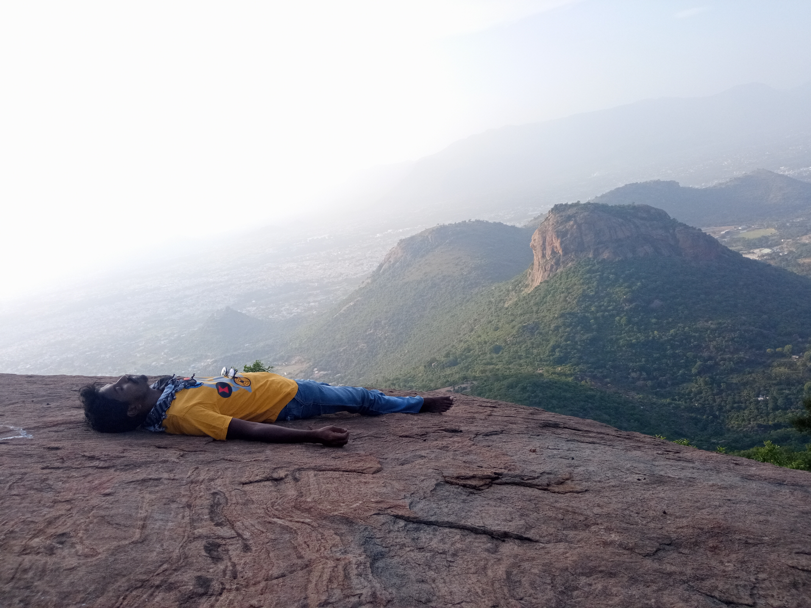

AT HILL TOP TAKE A LONG BREATH IN AND BREATH OUT
1 / 5

2 / 5

3 / 5

4 / 5
5 / 5
At Top hill , Viewing the city with super cool mode!
If you at Top hill inner Feeling a change in the energy that we can start to move from the hidden depth of our collective experience and grow towards feeling the light and joy.
View Options About